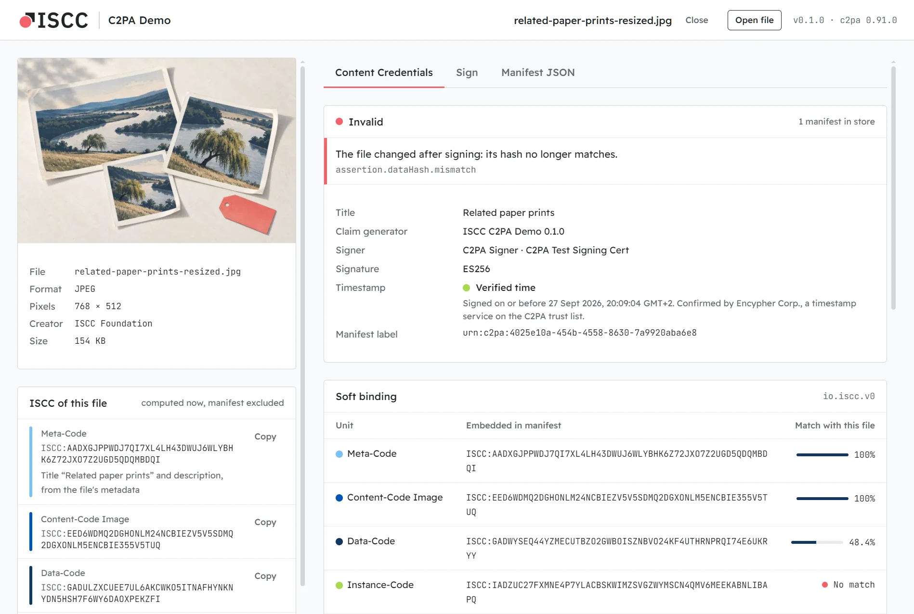

Watermark
Embedded into the content
A party puts an identifier into the content before it spreads, and a decoder reads it back. Content that was never marked carries none.
Tech demo · ISCC soft binding for C2PA · Windows, macOS, Linux
Content Credentials are tied to a file by a hash of its exact bytes. Resize or re-encode the file and they no longer match. This tech demo adds the International Standard Content Code (ISCC, ISO 24138) to the credentials: a code anyone can calculate from the content itself.

A signed image, re-encoded at half size, with its Content Credentials copied back in. C2PA now says Invalid: the bytes changed. The ISCC Content-Code still matches the pixels at 100%, and at 81% after a crop, where unrelated images score around 50%. The credentials stay invalid, but the ISCC tells you which content they were made for.
Drop an image, a document or an audio file. See its Content Credentials (who signed it, when, and whether the signature holds) and its ISCC.
Save a signed copy. Its Content Credentials carry the ISCC, a timestamp and, if you choose, whether AI training and data mining is allowed.
Open a signed file, changed or not. The app calculates the ISCC again and compares it with the one in the Content Credentials, unit by unit.
Why soft bindings
C2PA binds a manifest to its file with a cryptographic hash of the exact bytes, which proves that nothing has changed. Platforms re-encode files and strip manifests every day, so a re-encoded copy no longer matches its credentials and a stripped copy has lost them.
A soft binding connects credentials and content through the content itself, so a service can find the credentials of a copy again. C2PA allows two kinds:
Watermark
A party puts an identifier into the content before it spreads, and a decoder reads it back. Content that was never marked carries none.
Fingerprint · ISCC
Anyone can calculate it from any copy, at any time, with software that implements the open standard. Checking it means calculating it again.
Inside the soft binding
An ISCC is made of units, each calculated from a different part of the file. The demo stores them in one
c2pa.soft-binding assertion with the algorithm io.iscc.v0, as
IEP-0020 defines.
Each unit is compared as a percentage: unrelated content scores around 50%, and the closer to 100%, the closer the content. The byte-based Data-Code and Instance-Code drop as soon as a file is re-encoded; that is their job. The Content-Code follows the image, the text or the sound.
Motivation
io.iscc.v0 has been on the C2PA soft binding algorithm list since 2024. This demo runs it end
to end with c2pa-rs, the open source C2PA SDK of the
Content Authenticity Initiative, on 19 file formats.
ISCC is an ISO standard with an open source reference implementation, so you can calculate the codes again and compare. The tests check every unit of this app against iscc-core and iscc-sdk, bit for bit.
Download · {{version_label}}
Images: JPEG, PNG, WebP, GIF, TIFF, SVG. Documents: EPUB, Word, PowerPoint, Excel, OpenDocument, plain text, Markdown. Audio: MP3, FLAC, WAV, M4A. The builds are not code-signed, so each card says how to get past the system's warning at the first start.
Windows 10 and 11, x64
Installer {{windows_size}}{{windows_name}}
SmartScreen shows “Windows protected your PC”. Choose More info, then Run anyway. The installer needs no admin rights.
macOS 11 or later, Apple silicon and Intel
for Terminal · read the script
curl -fsSL https://c2pa-demo.iscc.codes/install-mac.sh | bashPaste it into Terminal. It downloads the latest release, checks its checksum, installs the app and opens it, with no security warning.
Prefer the disk image ({{macos_size}})? Then macOS says it “could not verify” the app: choose Done, not Move to Bin, and Open Anyway in System Settings → Privacy & Security.
x86_64, WebKitGTK 4.1
AppImage {{appimage_size}}{{appimage_name}}
Make it executable and run it: chmod +x iscc-c2pa-demo-*.AppImage. Or install the
.deb (Debian, Ubuntu) or the .rpm (Fedora, openSUSE).
Checksums: SHA256SUMS · Release notes · All releases
Good to know
For developers
The core is Rust: c2pa-rs for Content Credentials,
iscc-lib for ISCC, and pure Rust readers for every format,
so you need no external tools and no Python. The same core also builds as c2pa-iscc, a
command-line tool that prints JSON, for scripts and agents. Both are Apache-2.0.
Needs Rust 1.96 or later, Node 22.12 or later and pnpm. On Linux also the Tauri system libraries.
git clone https://github.com/iscc/iscc-c2pa-demo
cd iscc-c2pa-demo
pnpm install
pnpm tauri dev
# the command-line tool
cd src-tauri
cargo run --features cli --bin c2pa-iscc -- sign photo.jpgFeedback
IEP-0020 defines how an ISCC is stored in a C2PA manifest, and it is still a draft. If you try the demo on files you know or reuse the code, tell us what worked and what didn't.